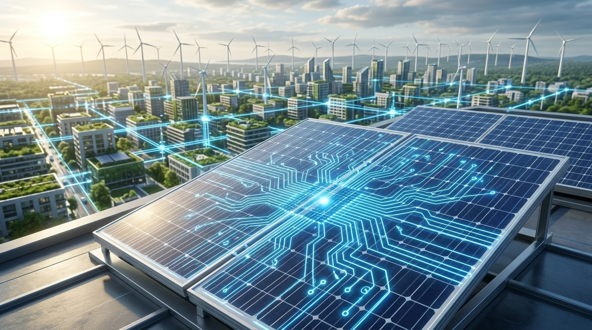
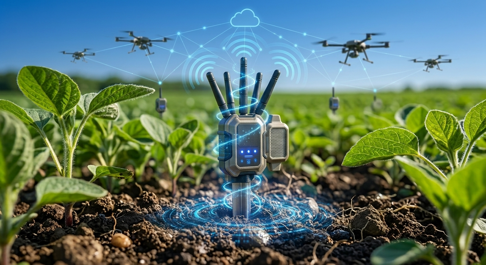
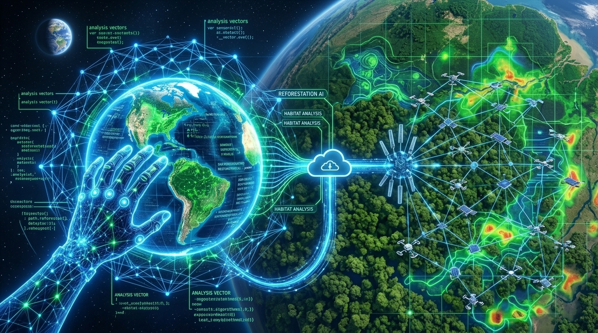

Descrição: Sistemas elétricos digitais que monitoram e gerenciam a distribuição de energia renovável de forma dinâmica, otimizando o consumo e reduzindo o desperdício energético.

Descrição: Sensores conectados no solo que analisam umidade, nutrientes e clima em tempo real, permitindo irrigação e fertilização inteligentes, economizando água e reduzindo o uso de defensivos.

Descrição: Algoritmos avançados capazes de prever eventos climáticos, rastrear o desmatamento em tempo real por imagens de satélite e otimizar rotas de transporte para reduzir a emissão de carbono.